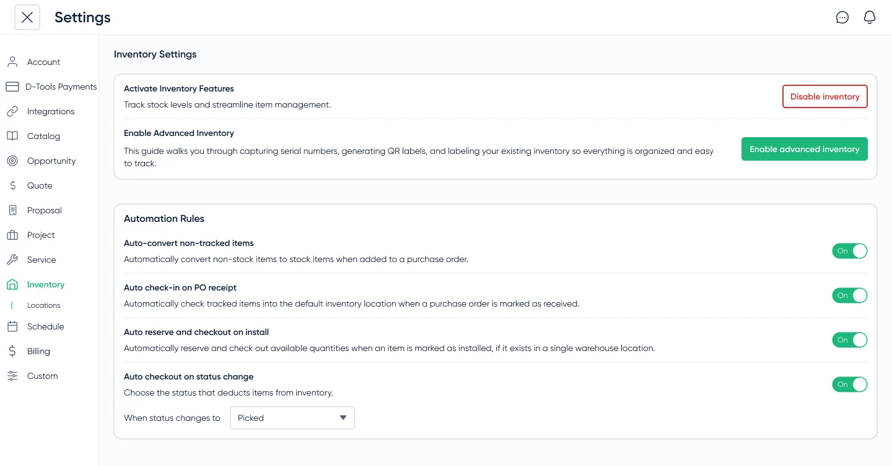

Inventory, Purchasing & Receiving
Commercial AV integrators were tracking millions of dollars in staged job equipment across whiteboards and disconnected spreadsheets. For our enterprise sales team, this was a critical blocker: mid-market and enterprise integration firms loved our proposal and quoting tools, but refused to sign contracts because D-Tools Cloud dropped asset visibility the moment purchase orders were sent to distributors.
I led product design for our 0→1 Inventory, Purchasing & Receiving suite, linking vendor POs directly to physical warehouse bins, technician vans, and active job stages—unblocking enterprise pilot deals and delivering an 8% lift in platform ARR.
At a glance
- The Problem: Operations teams lost 2 to 3 hours daily reconciling warehouse stock across disconnected spreadsheets and third-party databases. Enterprise pilot deals stalled because our system offered zero post-procurement visibility.
- What I Built: A relational inventory ledger linking PO receipts directly to warehouse locations, service vehicles, and project work orders. I engineered a dual-track receiving flow separating fast bulk receiving from serialized audit trails, deliberately descoping mobile hardware scanning to ensure baseline count integrity first.
- The Result: Eliminated manual spreadsheet reconciliation between procurement and warehouse teams, unblocking stalled enterprise pilot accounts and driving an 8% increase in platform ARR.
Problem
In commercial systems integration, hardware staging is high-liability: an entire commercial job site halts if a single $8,000 DSP matrix processor is missing on installation morning. Warehouse leads and project managers spent hours reconciling physical packing slips against backorder notices and disconnected spreadsheets. Because D-Tools Cloud could not verify whether delivered hardware was in the central warehouse, staged in a staging bin, or loaded on a service van, customers turned to third-party tools like Jetbuilt or Excel. For commercial firms managing multi-million-dollar bids, our lack of item-level lifecycle traceability was an immediate blocker during enterprise evaluations.
Core Objectives
- Unify purchasing, dock receiving, and project staging into a synchronized ledger to eliminate external double-entry
- Expose real-time item allocations so project managers can verify whether ordered stock is in transit, on hand, or committed to another job
- Design an ultra-low-friction dock receiving workflow that warehouse staff will not bypass during high-volume freight deliveries
- Implement automated safety-stock thresholds on high-turnover consumables to prevent job site delays
Research Insights
I mapped how teams tracked inventory outside the product, usually across spreadsheets or paid tools like Jetbuilt. One power user maintained a master spreadsheet with 14 tabs: one per project, plus cross-reference sheets, reconciliation logs, and a manual low-stock tracker highlighted in yellow. It took her two hours a day to keep current, and decisions were still made from stale data.
Across 6 user interviews and workflow mapping sessions, the pattern was consistent:
- Time sink: 2–3 hours/day reconciling stock; user-reported roughly 15–20% error rates
- User split: Small AV shops needed fast confidence in quantities, while larger teams needed asset‑level traceability for accountability
- Enterprise Sales Friction: Enterprise account executives confirmed 5 six-figure pilot evaluations were frozen because prospective accounts could not track staged equipment past initial purchasing.
Defining Decision: Relational Ledger vs. Isolated Stock List
The lowest-friction engineering approach was building an isolated static stock table requiring manual count reconciliation. However, that would simply digitize the spreadsheet failure mode within our software. I advocated for building a fully relational inventory model integrated directly into purchasing POs and active project work orders.
While this expanded database schema complexity and required cross-squad alignment across quoting, procurement, and field service teams, it resolved the fundamental operational bottleneck: the moment freight is checked in at the loading dock, line-item quantities reflect immediately on the project manager's installation schedule.
Legacy spreadsheet workflow
Teams spent 2 to 3 hours daily cross-referencing 14 spreadsheets. Stale stock counts caused expensive purchasing mistakes before morning crews ever reached the job site.
Third-party tool tax
Paying for separate tools like Jetbuilt created duplicate data entry, disconnected project costs, and frequent tracking errors.
Unified inventory platform
A unified system tying POs directly to job schedules. Warehouse teams catch stock shortages early and eliminate manual count reconciliation.
System Model & Tradeoffs
The core design challenge was defining how an item moved across its lifecycle. A flat stock count fails operational teams because it doesn't explain what can actually be used today. We structured inventory around three sequential lifecycle stages, alongside an independent threshold warning for low stock:
Tradeoffs: Real-Time Sync vs. Shipping on Time
Early in architectural scoping, I proposed a bidirectional WebSocket synchronization model: if a dock worker checked in a delivery of amplifiers, every open browser session across the company would update counts instantaneously without a page refresh.
Our lead engineer walked me through the infrastructural trade-off: maintaining persistent socket connections across thousands of concurrent tenant sessions would require substantial backend re-architecture, risk connection drops on intermittent warehouse Wi-Fi, and compromise our 12-week delivery commitment for enterprise pilot renewals.
We implemented a pragmatic compromise: optimistic local UI updates paired with an asynchronous polling bus and contextual stale-data notification badges. To handle concurrency collisions—such as two project managers allocating the same remaining video processor simultaneously—we designed optimistic locking conflict resolution dialogs that identified who secured the reservation and surfaced immediate replenishment alternatives. This preserved our Q4 launch window while safeguarding 100% database count integrity.
Balancing Fast Receiving with Serialization Audits
Field discovery revealed an acute operational conflict between customer tiers. Residential custom installers operate lean crews who receive dozens of commodity SKUs (Cat6 spools, HDMI patch leads, low-voltage brackets) from delivery trucks in minutes; forcing mandatory modal forms and serial number capture paralyzed their dock workflow. Conversely, commercial enterprise contractors managing corporate facilities and higher-ed campuses require strict serialization and MAC address capture for manufacturer warranty validation, asset depreciation, and compliance audits.
I designed a dual-track receiving architecture: a friction-free, quantity-stepper interface by default for rapid bulk receiving, paired with an optional asset-level serialization modal triggered for high-dollar hardware. This eliminated dock friction for residential shops while giving enterprise procurement and compliance officers the verified audit trail necessary to execute pilot agreements.
Quantity-first default: Zero required modals. Installers tap once to confirm bulk arrival and immediately load vans for the day.
Asset-level audit layer: Enforces serialization for high-value equipment without slowing down routine commodity receiving.
Engineering Velocity Through Design System Tokens
We faced an immovable 12-week delivery timeline tied to Q4 enterprise contract renewals. By leveraging the standardized data table schemas, slide-over drawer primitives, and badge token styles codified in our D-Tools component library, front-end engineers bypassed custom layout scaffolding entirely. This architectural reuse reduced front-end regressions during integration testing and preserved two full sprint cycles to resolve complex logistical edge cases, such as partial shipment receipts, damaged goods returns, and split backorders.

Prototyping & Validation
In Round 1, our first receiving prototype forced warehouse staff to scan serial numbers for every single line item. Residential testers took over four minutes to check in an eight-item delivery, immediately rejecting anything that slowed down morning dock receiving.
By Round 3, separating bulk items from serialized gear cut median receiving time to 28 seconds, while commercial teams still captured high-value equipment without missing compliance steps.
Impact
The unified inventory suite replaced fragmented spreadsheets and paper logs with a synchronized ledger across purchasing, warehouse staging, and field deployment. Operations leads recovered an estimated 10–15 hours weekly previously lost to manual physical stock audits.
During the initial pilot deployment, one commercial contractor identified over $42,000 in 'missing' high-end AV processors sitting untracked on overflow staging racks, preventing an unnecessary redundant purchase order.
Prior to this release, enterprise sales repeatedly stalled with commercial prospects whose core requirement was warehouse staging visibility. Delivering verified inventory and receiving tracking directly resolved this objection, unblocking stalled pilot accounts and contributing to an 8% year-over-year growth in customer accounts and an 8% platform ARR expansion.
Lessons & Next Steps
In warehouse software, trust is binary. If a technician drives to a job site and the four switches the app said were in stock aren't in the van, they stop using the app and go back to pen and paper. This feature succeeded because every number explained its history: where the item came from, which project had it claimed, and when the replacement was arriving.
- What comes next: Once teams trusted the baseline counts, the next logical steps were mobile barcode scanning in the warehouse and auto-generating reorder POs when stock hits minimums. We held those back from the MVP on purpose to make sure the foundation was rock-solid first.